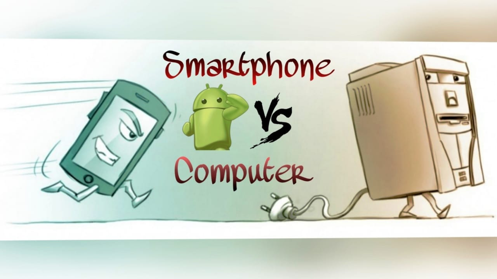
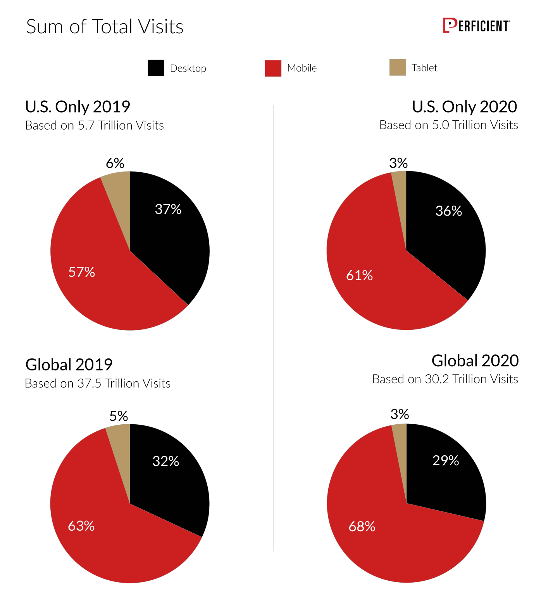
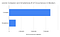
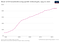
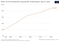
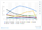

Computer VS Smartphone
The importance of being specific about who your idea is for


What if you focus on computer users avoiding completely what is happening in mobiles and their users because computer users are worth it and because there are more important things to do with computers and accessibility and clarity is way better with this device than it is in mobiles. I address this to everyone who is trying to build a tech-enabled business or who wants to work in the tech industry. For example, As a software engineer, you could skip mobile technologies. As a tech-enabled business entrepreneur, you could skip the audience of mobile users because there are still PC and MAC folks like me who can live without a smartphone and who are doing works that matter and need something that you can build to make it easier for us.
Of course, the metrics are tempting and here they are here

there are way more mobile users than computer users because billions of people are living without computers. This could make you think that the things to be done are on mobiles not on computers but this is a bad way of deciding because by doing this you are following the law of bigs numbers and big numbers say nothing
The minimum viable audience is also about that. You can filter your audience by the device they use and instead of computers, you could target Tablets. What if you build this eBook reader that works only for a given screen size of Tablet. There are a lot of cool tech-enabled ideas only accessible and usable with a computer that you can build and I cannot imagine mobile networks and infrastructure running with computers that stand as servers for backend operations. Then rather than being a mobile app developer, you could be a computer-only software engineer doing work (computer only software) that matters for professionals who use and care about computers.
To give you more numbers as input for your decision-making process I thought it could be cool to give you some metrics about mobile and computer in medium’s publications like how I have done for all these articles of my publications words metrics. Already 6 articles about metrics related to words as the first experiment of this tech-enabled platform about data journalism called J…….K I was writing about in this article.

It is very likely that this tech-enabled platform will apply this sort of advice I am giving you with this article because this tech-enabled platform will be only accessible using a computer and I am asking myself what would happen if my articles were only readable by a computer user. Being specific about who is it for is important. That’s what advise Seth Godin in his book the practice and sincerely most of the things everybody is using today were built for a little set of persons. There were not so many internet users in 1993

and not so many computer users. Of course, mobile fuelled and accelerated the adoption of the internet but that’s not for this reason that we all should care about mobile-related technologies and tech-enabled ideas.

Again Focusing on small specific things is important And what if as a data Scientist looking for the next opportunities you focus on data about our world available on Ourworldindata and make them the playground for experimenting with predictive models and trying to highlight systemic behaviors from these data. The data-driven book I was writing about in this article needs these data about the population like how this data-driven book about the theory of evolution here needs data about species populations and morphology.
With computers the screen is wide and you have more space for creative tech-enabled ideas and capabilities for building them while learning.
